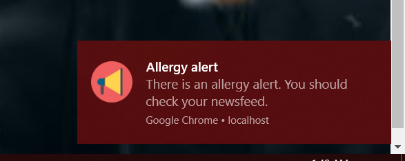

Faculty of computer science,
"Alexandru Ioan Cuza" University of Iași
—
Iași,
Iași,
România
Ghid de utilizare
Login
Utilizatorul are posibilitatea de a se loga cu contul de facebook in aplicatie.
Facebook Login
Dupa logare, acesta este redirectat pe pagina principala, unde dispune de un meniu cu ajutorul caruia poate naviga prin aplicatie.
Pagina principala
Pe pagina profilului, acesta va avea acces la informatiile preluate din contul de facebook.
Pagina profilului
O noua alerta de alergie va determina notificarea utilizatorulu cu privire la aceasta. Din fereastra notificarii
utilizatorul va fi redirectat pe newsfeed pentru a vedea ultimele alerte.

Notificarea
De asemenea, utilizatorul va putea distribui informatii cu privire la o alerta de alergie prietenilor lui.
Distribuirea
Pe pagina de newsfeed, utilizatorul are acces la ultimele alerte de alergii cu informatii
precum cauze sau simptome.
Pagina de newsfeed cu alerte
Statisticile pot fi vizualizate in pagina newsfeed, accesand butonul"Show/Hide":
Statisticile generate pe baza datelor din alerta.